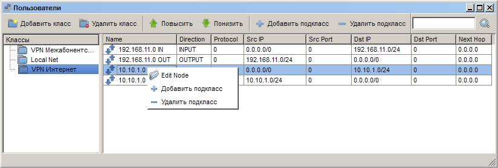
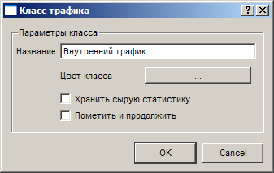
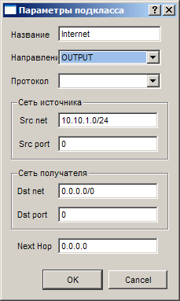

|
Интерфейс и логика |
Top Previous Next |
|
Открыть раздел «Классы трафика» можно одним из следующих способов:
– кнопкой на панели; – через меню «Главное меню» → «Классы трафика»;
Интерфейс окна составляют кнопки «Добавить класс» и «Удалить класс», «Добавить подкласс» и «Удалить подкласс», «Повысить» и «Понизить», список классов (левая часть экрана) и таблица с подклассами в правом. Для каждого подкласса в таблице приводится название (Name), а также правила отбора трафика для подкласса по направлению (Direction), протоколу (Protocol), диапазонам адресов (Src/Dst IP) и портов (Src/Dst Port) входящего и исходящего трафика, а также адресу следующей точки в маршруте трафика (Next Hop).

«Добавить класс» – вызывает окно «Класс трафика», описанное ниже.
«Удалить класс» – удаляет выбранный класс со всеми подклассами. Удаление класса трафика необратимо!
«Повысить» – поднимает вес выбранного класса на одну единицу и перемещает его вниз в списке классов.
«Понизить» – снижает вес выбранного класса на одну единицу и перемещает его вверх в списке классов.
«Добавить подкласс» – вызывает окно «Трафик», описанное ниже.
«Удалить подкласс» – удаляет выбранный подкласс. Удаление подкласса трафика необратимо!
Окно «Классы»
Окно «Классы» открывается при добавлении класса трафика (кнопка «Добавить класс»), двойном щелчке по существующему классу трафика, а также при выборе пункта «Edit class» в контекстном меню. Здесь устанавливается название класса, его цвет (для дифференциации соответствующего этому классу трафика в сетевой статистике»), а также дополнительные параметры класса (флажки «Хранить сырую статистику» и «Пометить и продолжить»).

Если флажок «Пометить и продолжить» установлен, то при обнаружении трафика, подходящего под определение данного класса, трафик будет к нему отнесен, а затем продолжится поиск соответствий условиям других классов. Если флажок не установлен, то трафик, соответствующий этому классу, не сможет быть отнесен одновременно к нескольким классам.
Опцию «Хранить сырую статистику» необходимо использовать лишь в том случае, если вы хотите просматривать детальную сетевую статистику об активности абонентов. Обратите внимание, что это может значительно замедлить работу системы при высоких нагрузках, а также значительно увеличит базу данных в объеме.
Сырая NetFlow-статистика хранится в базе данных в виде отдельных таблиц на каждый день (nfsгодмесяцдень). Вы можете самостоятельно удалять ненужные таблицы. Чтобы получить доступ сразу ко всей статистике, пользуйтесь таблицей billservice_netflowstream, которая агрегирует все данные из дочерних таблиц (nfsгодмесяцдень).
Обратите внимание, что для уменьшения количества записей в базе данных система агрегирует похожую статистику по одинаковым классам для каждого пользователя. Время агрегации настраивается в файле настроек биллинг-системы ebs_config.ini параметром aggrtime. Не рекомендуется снижать указанное по-умолчанию время.
Окно «Параметры подкласса»
Окно «Параметры подкласса» открывается при добавлении подкласса трафика (кнопка «Добавить подкласс»), двойном щелчке по существующему подклассу трафика, а также при выборе пункта «edit node» в контекстном меню. Здесь непосредственно устанавливаются правила, на соответствие которым проверяется трафик.

Название подкласса вводится в поле «Название». Оно не должно быть пустым.
Внимание: в пределах одного класса необходимо описать как входящие так и исходящие направления трафика!
В выпадающем списке «Направление» необходимо указать, к какому направлению относится трафик для данного подкласса, входящему (INPUT) либо исходящему (OUTPUT). Все направления указываются относительно клиента. Внутри каждого класса рекомендуется создать подклассы для трафика с определённых адресов (исходящий трафик) и на эти адреса (входящий трафик).
Выпадающий список «Протокол» служит для отделения трафика по признаку протокола (UDP, RDP, GGP, IPIP, DDP, HMP, TCP, OSPF, GRE, ENCAP, ICMP, IGMP, IPENCAP, IDPR-CMTP). Если выбрать пустое поле, то протокол не будет учитываться.
В группе «Сеть источника» устанавливаются адреса («Src net»), а также, при необходимости, порт («Src port») исходящего от клиента трафика. Если указаны адреса 0.0.0.0/0, то правило будет действовать для всех IP-адресов. Или же нужно указать конкретную подсеть в следующей форме: например, 192.168.1.0/24 будет означать диапазон адресов от 192.168.1.1 до 192.168.1.254.
Обратите внимание: для указания «любого IP-адреса» пользуйтесь значением 0.0.0.0/0. Адрес 0.0.0.0 (0.0.0.0/32) система воспринимает как один IP адрес. Для указания конкретного IP-адреса пользуйтесь записью вида 192.168.1.1/32
В группе «Сеть получателя» устанавливаются адреса («Dst net»), а также, при необходимости, порт («Dst port»).
Трафик может проверяться на соответствие по адресу следующей точки в маршруте следования (поле «Next Hop»). Проверка не производится, если в данном поле установлено значение 0.0.0.0 (значение по умолчанию). Например, для того, чтобы охватить подклассом весь трафик, который далее следовал на адрес 123.123.123.123, установите в поле «Next Hop» это значение.
Поля Src port/Dst port в случае указания протоколов, не использующих порты, содержат значения опций протоколов(icmp и др) или не имеют смысла вовсе. This help file was created with an unregistered evaluation copy of Help & Manual. © EC Software. All rights reserved. This message will not appear if you compile this help file with the registered version of Help & Manual. |